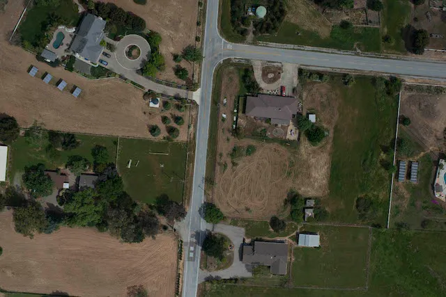
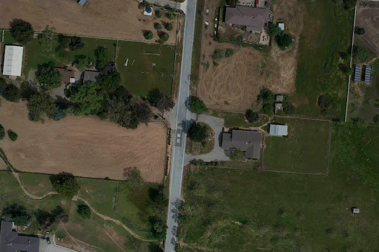
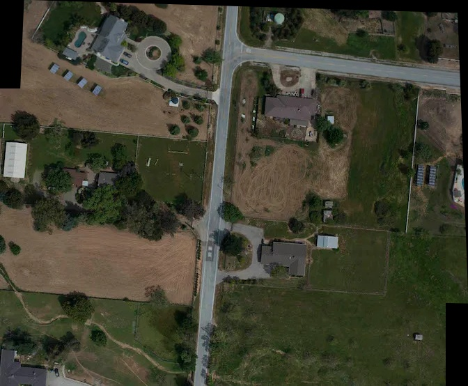
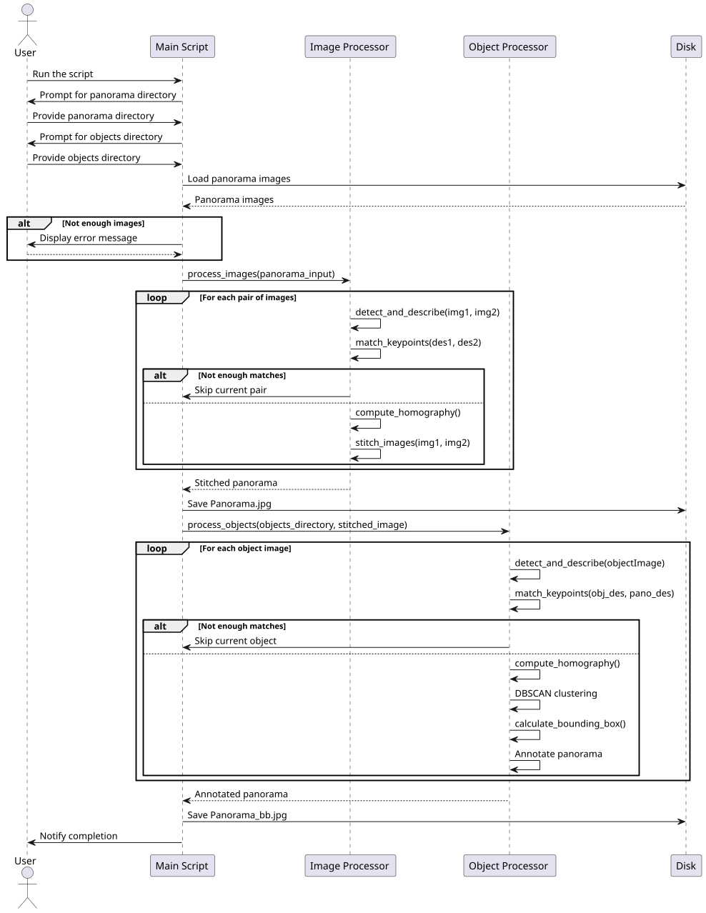
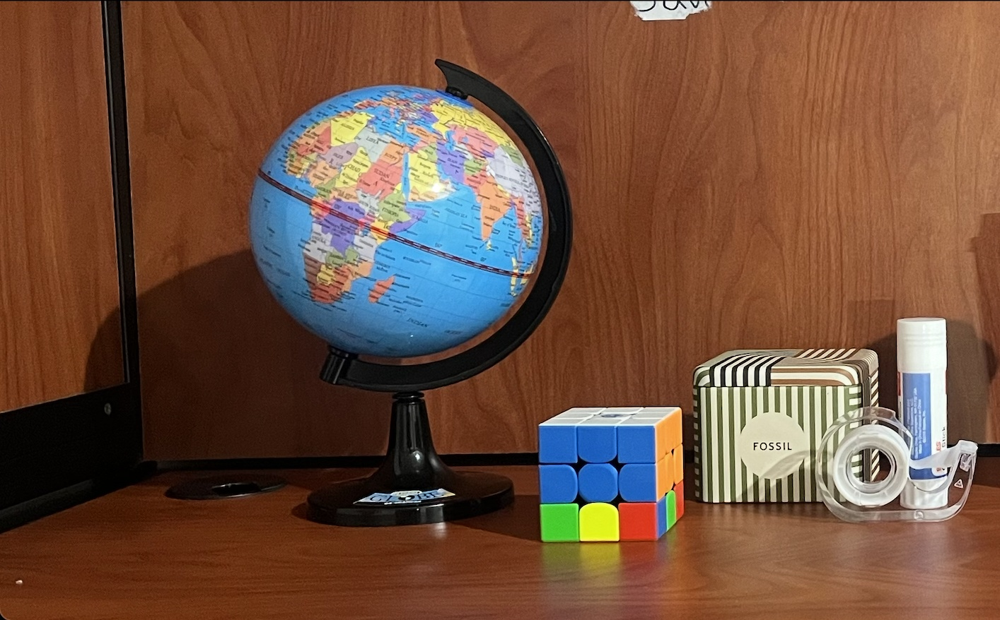
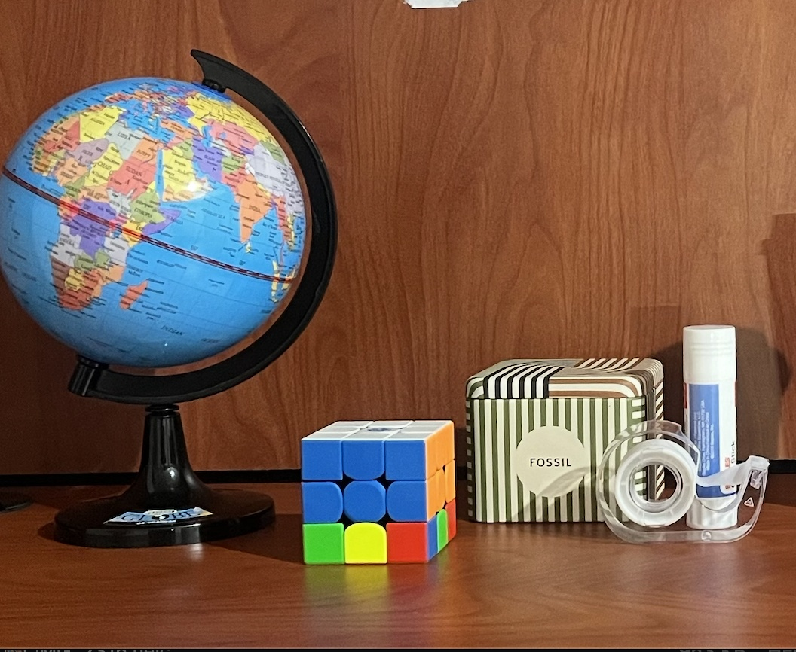
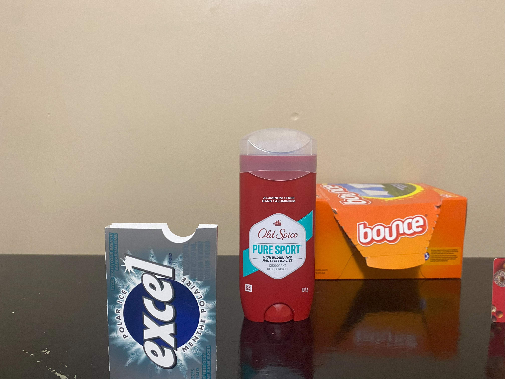
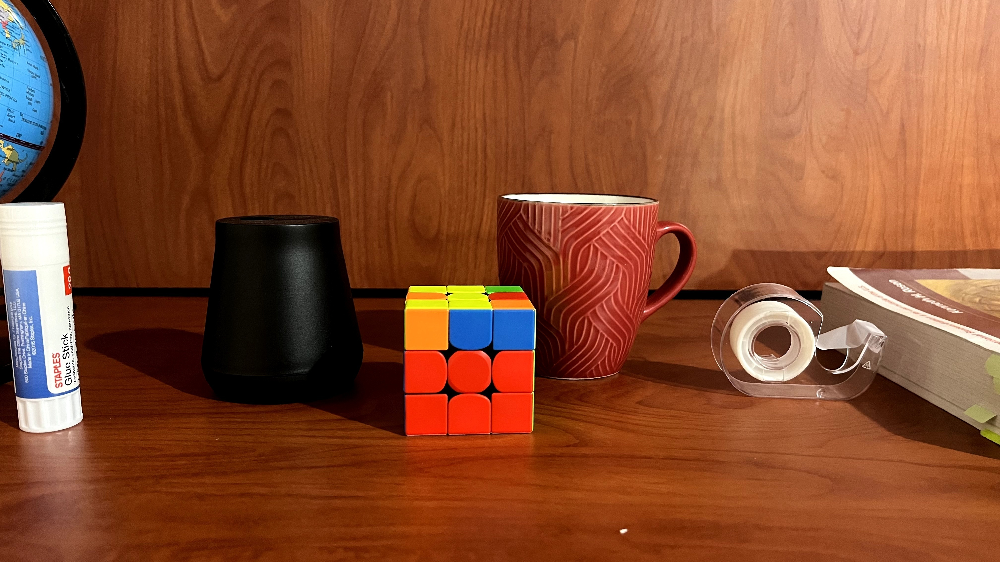
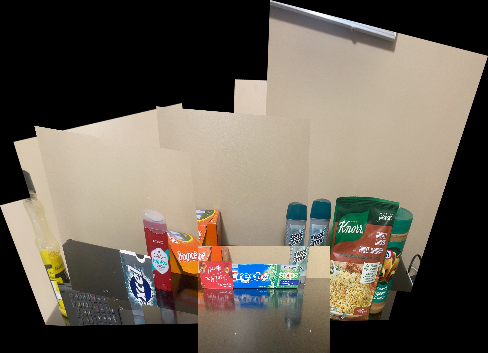
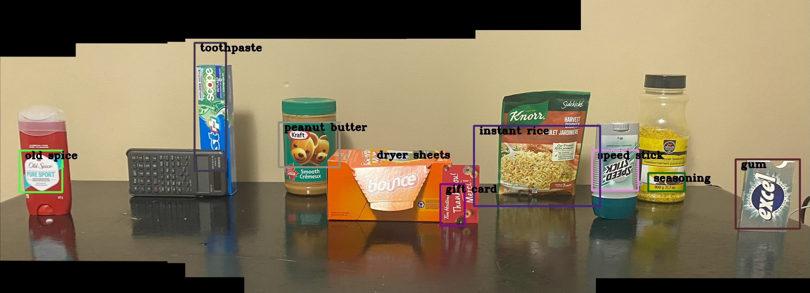

Image Stitching and Object Detection



Overview
This project explores advanced computer vision techniques to develop a system for image stitching and object detection. The primary goal is to create a seamless panoramic image from multiple overlapping input images and to identify and localize objects within the stitched panorama.
Introduction
The Enhanced Image Stitching and Object Detection project combines state-of-the-art computer vision algorithms to address two key tasks: image stitching and object detection. Using SIFT (Scale-Invariant Feature Transform) for feature detection, homography for image alignment, and DBSCAN clustering for object localization, this project provides a modular approach to creating detailed panoramic views while identifying and labeling objects. By dynamically handling user inputs and generating intermediate visualizations, the project is suitable for academic exploration and practical deployments.
Objectives
- Develop a robust system to stitch multiple overlapping images into a seamless panorama.
- Implement object detection to locate and label objects in the stitched panorama.
- Provide intermediate visualizations for debugging and understanding algorithmic steps.
- Ensure scalability and adaptability of the system for various use cases.
Methodology
1. Image Stitching
- Feature Detection: SIFT is used to detect and describe keypoints in the input images.
- Keypoint Matching: FLANN-based matching and Lowe's ratio test are applied to find correspondences between images.
- Homography Calculation: RANSAC is used to compute the homography matrix, aligning overlapping images.
- Stitching: The homography is applied to warp and blend images into a single panoramic view.
2. Object Detection
- Feature Matching: Object images are matched against the panorama using SIFT and FLANN-based matching.
- Clustering: DBSCAN groups matched points to identify object locations in the panorama.
- Bounding Box Calculation: Dynamic bounding boxes are computed around detected clusters.
- Visualization: Labels and bounding boxes are drawn on the panorama for clarity.
Implementation
The script begins by prompting the user for directories containing panorama images and objects. It loads and processes the panorama images using SIFT to detect keypoints, match descriptors, and compute homographies to iteratively stitch images into a panorama. After creating the panorama, the script processes object images by detecting features, matching them with the panorama, and clustering match coordinates using DBSCAN to identify object locations. Bounding boxes are calculated and drawn around detected objects, labeled with predefined names. Finally, the stitched panorama and the annotated panorama are saved to disk, and the user is notified of the process completion.
- Input directories for panorama images and object images are specified by the user.
- The system iteratively processes the images for stitching, saving intermediate keypoint visualizations.
- The stitched panorama is analyzed for object detection, with results saved as an annotated image.
- Outputs include the stitched panorama (
Panorama.jpg) and the annotated panorama (Panorama_bb.jpg).

Installation
- Clone this repository:
git clone https://github.com/jayd719/enhanced-image-stitching.git - Navigate To Project Folder:
cd enhanced-image-stitching - Install the required Python libraries:
pip install -r requirements.txt
Requirements
- Python 3.7+
- Libraries:
- OpenCV
- NumPy
- scikit-learn
Usage
- Place the input images for stitching in a directory (e.g.,
./Panorama). - Place the object images in another directory (e.g.,
./Objects). - Run the script:
python image_stitching_enhanced.py - Follow the prompts to specify the directories for the panorama and objects. The default directories are
./Panoramaand./Objects. - The output files will be saved in the
./Panoramadirectory:Panorama.jpg: The stitched panorama.Panorama_bb.jpg: The panorama with bounding boxes and labels for detected objects.
Project Structure
image_stitching_enhanced.py: The main script for stitching images and detecting objects../Panorama: Default directory for input panorama images and output stitched panoramas../Objects: Default directory for input object images../Keypoints: Directory for intermediate visualization of keypoint matches.
Results
-
Panorama Creation from Two Images Aligned on the Same Y-Axis Level of the Camera

Input Image 1 
Input Image 2 
Resultant Panorama -

Input Image 1 
Input Image 2 
Input Image 3 
Input Image 4 
Resultant Panorama -
Input Image 1 Input Image 2 Output Image -

Input Image 1 
Input Image 2 
Input Image 3 
Input Image 4 
Resultant Panorama -

Object Detection
Future Work
- Add support for non-planar and 360-degree panoramas using video stream.
Conclusion
This project successfully combines image stitching and object detection into a unified system. The use of advanced computer vision algorithms and modular implementation ensures versatility and robustness. The system demonstrates significant potential for real-world applications and serves as a foundation for future enhancements.